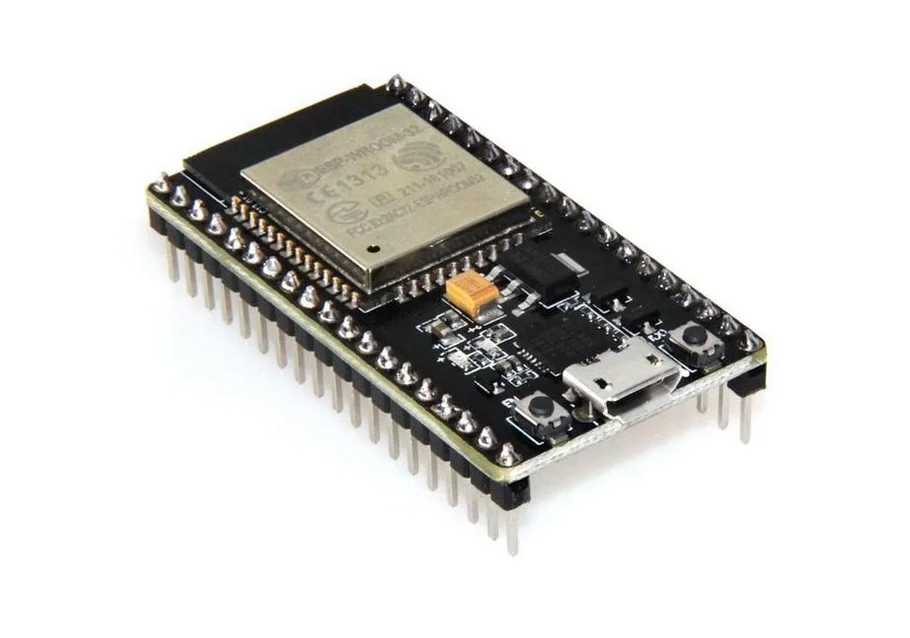

En este trabajo se buscó aplicar los conocimientos de la materia para desarrollar un proyecto personal libre, lo que en este caso fué un oxímetro, un medidor de saturación de oxígeno en sangre y frecuencia cardíaca.
Para realizar este proyecto se llevaron a cabo varios pasos.
Se ha tenido que invertir dinero al proyecto (por desgracia). Los elementos necesarios fueron: Esp32, breadboard, cables, Max30100(sensor de pulso cardíaco), y una pantalla OLED SSD1306.
Momento de preparar el sensor MAX30100. Hay que soldarle los pines que vienen con el mismo.
Otra cosa que queda e importante, es hacer un arreglo a esta placa, al parecer este modelo trabaja con un voltaje no adecuado para el esp32. La solucion es desconectar los resistores de 1.8V (a la fuerza) y conectar al regulador de 3.3V.
Esto es un poco complicado de hacer, se necesita un poco de experiencia, pulso y buen ojo. Gracias a Nico Mahnic que lo hizo por mi, de no tener un Nico, se le agregará dificultad al proyecto.
Ahora toca ver y seguir el esquema, hay que hacer que los cables se conecten entre si a traves del breadboard.
Una duda que me surgió es la de como funciona el breadboard, ya sabiendo eso paso a explicarlo:
Hay dos partes, una que tiene 63 lineas con 5 puntos de conexion en comun (donde hacemos las uniones de un mismo cable) y la otra parte posee cuatro lineas a los extremos, de a 25 puntos de conexion para la alimentacion de voltaje y tierra del circuito.
Un problema con el que me encontré fue que al parecer los pines del esquema no comparten la misma ubicacion que la del mio, asi que la solucion es conectar los cables al mismo nombre del pin o similar del que figura en nuestra placa.
Hora de instalar las librerias correspondientes, las cuales van a ser: MAX30100lib, Adafruit_SSD1306.h y Adafruit_GFX.h.
Solo nos queda compilar el codigo y subirlo al esp32.
#include#include #include #include "MAX30100_PulseOximeter.h" #define REPORTING_PERIOD_MS 100 PulseOximeter max_sensor; uint32_t lastReportTime = 0; Adafruit_SSD1306 OLED = Adafruit_SSD1306(128, 32, &Wire); void onBeatDetected() { Serial.println("Beat!"); } void setup() { // put your setup code here, to run once: OLED.begin(SSD1306_SWITCHCAPVCC, 0x3C); Serial.begin(115200); OLED.display(); OLED.clearDisplay(); OLED.setTextSize(2); OLED.setTextColor(SSD1306_WHITE); OLED.setCursor(0,0); OLED.display(); delay(1000); Serial.print("Initializing pulse oximeter.."); // Initialize the PulseOximeter instance // Failures are generally due to an improper I2C wiring, missing power supply // or wrong target chip if (!max_sensor.begin()) { Serial.println("FAILED"); for(;;); } else { Serial.println("SUCCESS"); } max_sensor.setOnBeatDetectedCallback(onBeatDetected); } void loop() { // put your main code here, to run repeatedly: max_sensor.update(); if (millis() - lastReportTime > REPORTING_PERIOD_MS) { OLED.clearDisplay(); OLED.setCursor(0,0); OLED.print("H:"); OLED.print(max_sensor.getHeartRate()); OLED.println("bpm"); OLED.print("SpO2:"); OLED.print(max_sensor.getSpO2()); OLED.println("%"); lastReportTime = millis(); } OLED.display(); }
Como resultado obtenemos un oxímetro completamente funcional y muy útil, lo que si no muy preciso pero cumple decentemente su función.